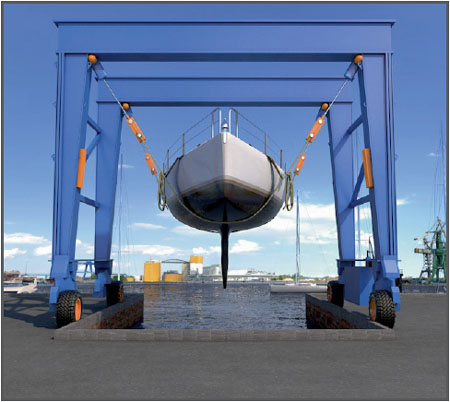
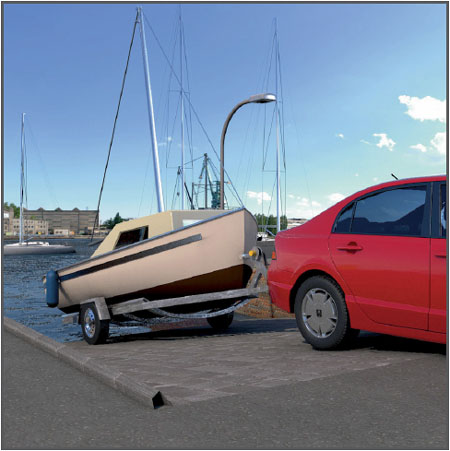

Mangelhaftes Abstützen von Booten, reißende Anschlagmittel und rutschige Untergründe können zu schweren Unfällen führen.

Auswahl/Benutzung
Lagerung
Boote standsicher abstellen. Windeinflüsse und Hochwasser berücksichtigen.
Tragfähigkeit des Untergrundes überprüfen. Hiervon hängt die Größe der Auflagerfläche (Pallhölzer) ab.
Einzelteile von Abstützungen einschließlich der Pallhölzer miteinander verschwerten.
Einzelabstützungen vermeiden.
Möglichst dem Schiffstyp angepasste Lagerstelle verwenden.
Teleskopierbare Stützen so einstellen, dass die Boote keinen Schaden nehmen. Für gleichmäßige Belastung sorgen.

Zusätzliche Hinweise zum
Transport mit Bootslift
Ränder (Kai) von Hafenbecken müssen die Lasten aus dem Bootslift einschließlich max. Bootsgewicht aufnehmen können.
Darauf achten, dass die Ränder mit hohen Radabweisern als Sicherung gegen unbeabsichtigtes Abrutschen des Bootsliftes ausgerüstet sind.
Fahrwege des Bootsliftes müssen tragfähig und frei von Hindernissen sein.
Nur geprüfte Gurte verwenden, die das Gewicht des zu transportierenden Bootes aufnehmen können. Gurte gegen Ab- und Verrutschen sichern.
Boote möglichst dicht über dem Boden transportieren.
Transport mit Trailer
Sliprampen für Straßenfahrzeuge sollten keine größere Neigung als 6° (ca. 1:10) haben.
Zugfahrzeuge nicht zu weit auf die Sliprampe fahren. Gegebenenfalls Zwischenseile einsetzen. Vorsicht bei glitschigen Sliprampen.
Bei steiler Slipbahn Talje als Ablaufstopper einsetzen.
Transport mit Slipwagen
Gleise von Slipbahnen müssen einen tragfähigen Untergrund haben.
Zum Boot passende Slipwagen verwenden. Lagerung des Bootes auf dem Slipwagen vor dem Herausziehen aus dem Wasser überprüfen und gegen wegrutschen sichern.
Sicherheitsabstand zwischen Slipwagen und festen Teilen der Umgebung von mindestens 0,50 m einhalten.
Seile und Anschlagmittel vor Benutzung auf augenscheinliche Mängel prüfen.
Der Bediener der Slip- bzw. Verholwinde muss die gesamte Seilführung und den Slipvorgang beobachten.
Im Bereich der Seilumlenkungen dürfen sich keine Personen aufhalten.
An Bord befindliche Personen müssen während des Slipvorganges Rettungswesten tragen.